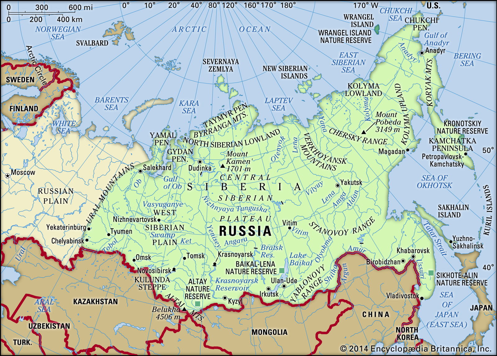

Paragraphs
General
Siberia is a huge area in Russia located on the asian half and it occupies around 10.006.450 km². This is around 59% of whole Russia and takes aproximately 23% of the whole continent of Asia.
Inhabitants
There live around 40 million people in Siberia, that's around a quarter of the entire population of Russia.
Landscape
Large parts of siberia are filled with overgrown tundras. There are also several mountains and plains.
Cities
- - Novosibirsk (Capital city)
- - Barnaoel
- - Irkoetsk
- - Kemerovo
- - Krasnojarsk
- - Novokoeznetsk
- - Omsk
- - Tomsk
- - Tjoemen
- - Tsjeljabinsk
- - Chabarovsk
- - Vladivostok
- - Jekaterinenburg
This fishing boat is stuck in the thick
A map of Siberia.

The capital city Novosibirsk